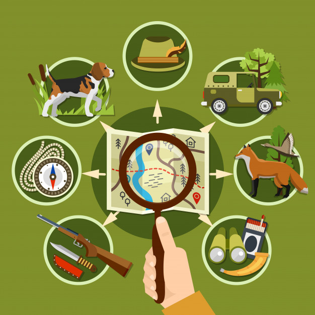

Imágenes
Abrir imágenes desde carpetas
Abrir una imagen desde una url
Abrir un gif animado
Crear un mapa de imagen

Imagen con pie
Fig1. - Lenguajes de Programación.


 Fig1. - Lenguajes de Programación.
Fig1. - Lenguajes de Programación.